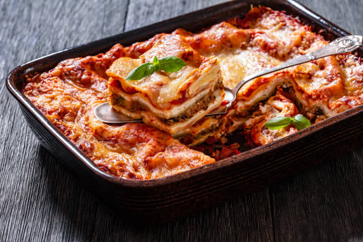

La pasta
Forma las capas.
Tra sapori, tradizione e cultura italiana
La lasagna es uno de los platos más conocidos de la gastronomía italiana. Sus capas de pasta, ragù, bechamel y queso forman una combinación que se convirtió en un clásico dentro y fuera de Italia.
Pero detrás de este plato hay mucho más que una receta: hay siglos de historia, diferentes tradiciones regionales y una forma de entender la cocina que se transmite de generación en generación.

La lasagna que conocemos actualmente está especialmente vinculada con Emilia-Romaña, una región del norte de Italia. Dentro de ella, la ciudad de Bolonia es muy conocida por la lasagna alla bolognese, una de las versiones más tradicionales del plato.
A lo largo de los siglos, diferentes preparaciones hechas con láminas de masa fueron evolucionando hasta convertirse en las distintas formas de lasagna que conocemos hoy.
Para preparar una lasagna tradicional podemos utilizar:
La lasagna se construye principalmente a partir de tres preparaciones:
Forma las capas.
Una salsa de carne cocinada lentamente con vegetales y tomate.
Una salsa cremosa preparada con leche, manteca y harina.
Juntas forman la combinación característica de la lasagna.
Una buena lasagna necesita tiempo. El ragù puede cocinarse lentamente para desarrollar más sabor, mientras que la bechamel debe alcanzar una textura cremosa y suave.
Después llega el momento de construir las capas, cubrirlas con queso y llevarlas al horno hasta conseguir una superficie dorada.
No se trata solamente de cocinar todos los ingredientes, ya que cada parte necesita su propio tiempo.
Cocinamos la cebolla, la zanahoria y el apio con aceite de oliva. Agregamos la carne picada y cocinamos hasta que esté dorada. Luego incorporamos el tomate y dejamos cocinar a fuego lento.
Derretimos la manteca y agregamos la harina. Incorporamos la leche poco a poco mientras mezclamos para evitar grumos. Condimentamos con sal, pimienta y nuez moscada.
En una fuente colocamos una capa de salsa y luego una pasta. Agregamos ragù, bechamel y queso. Repetimos el proceso hasta completar la fuente.
Llevamos la lasagna al horno hasta que la pasta esté cocida y la superficie quede dorada y gratinada.
Dejamos reposar unos minutos, cortamos y servimos.
Garfield aprueba esta receta.
La gastronomía italiana está formada por una enorme variedad de platos, y cada región tiene sus propias especialidades.
Una de las preparaciones más famosas de Nápoles, reconocida por su masa suave y sus bordes característicos.
Un clásico de Roma preparado tradicionalmente con pasta, huevo, queso y guanciale.
Pasta rellena que puede prepararse con diferentes ingredientes y acompañarse con distintas salsas.
Un plato de arroz cremoso que puede prepararse con distintos ingredientes según la receta y la región.
La lasagna también puede ser una forma de compartir. Una misma receta puede cambiar con el tiempo, adaptándose a los ingredientes disponibles, a los gustos de cada familia y a las costumbres de cada lugar.
Quizás por eso no existe una única lasagna, pero todas las formas de prepararla tienen algo en común: el placer de sentarse a la mesa y compartirla.